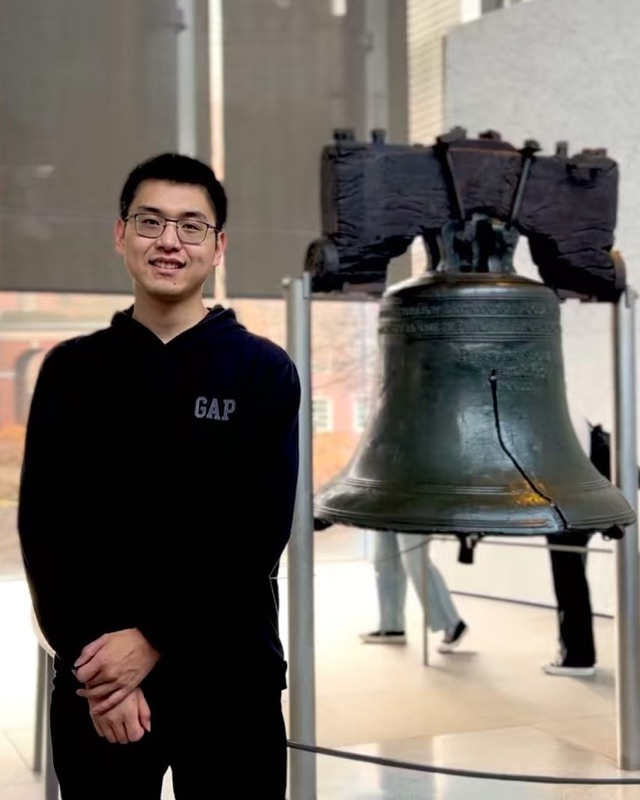
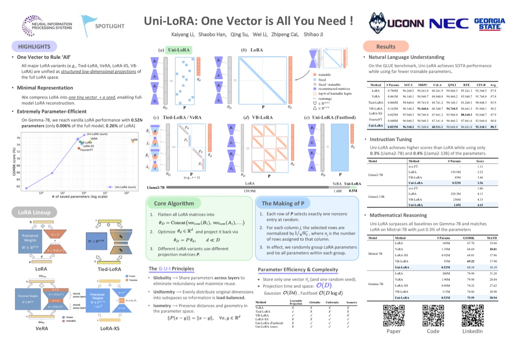

Kaiyang Li
Ph.D. Student, Computer Science and Engineering
University of Connecticut
About
I am a Ph.D. student in Computer Science and Engineering at the University of Connecticut. My research focuses on efficient adaptation of large models: parameter-efficient fine-tuning, model merging, and compact audio-language models.
Before UConn, I worked as an Applied Scientist at Tencent Music Entertainment Group.
News
- Sep 2026Mizar and RT-OPD submitted to ICASSP 2027; models released in the Mizar collection on Hugging Face.
- Sep 2026ReForge submitted to ICLR 2027.
- Summer 2026Research intern at NEC Laboratories America (Optical Networking & Sensing), building the Mizar family of compact audio-language models.
- 2026Received the Marion and Frederick Buckman Engineering Fellowship, UConn School of Computing.
- 2025Uni-LoRA accepted to NeurIPS 2025 as a Spotlight, and integrated into Hugging Face PEFT. Received the NeurIPS 2025 Scholar Award.
Selected Publications
Full list on Google Scholar.
Uni-LoRA: One Vector is All You Need
NeurIPS 2025Spotlight · top 3.19%
Reconstructs all LoRA parameters from a single shared vector through an isometric projection, tuning 0.0061% of base-model parameters while matching or beating strong LoRA variants. Officially supported in Hugging Face PEFT.

ReForge: Refining Merged Models with Anchor-Regularized Regression
Submitted to ICLR 2027
A bilevel framework that refines strong merged models module by module: Bayesian linear regression with an anchor-centered prior gives a closed-form update from unlabeled calibration activations, and Bayesian optimization tunes it per module. Works as a plug-and-play refinement on top of existing merging methods.
Mizar: A 159M-Parameter Audio-Language Model for Audio Understanding
Submitted to ICASSP 2027
State of the art among sub-200M audio-language models, raising the 3-benchmark average from 37.5 to 45.7 with fewer parameters and less compute than the previous best.
Reward-Tilted On-Policy Distillation for Acoustic Grounding in Audio-Language Models
Submitted to ICASSP 2027
RT-OPD strengthens acoustic grounding in on-policy distillation so compact audio-language models rely on audio evidence rather than textual shortcuts. The resulting Mizar-3B reaches 74.7 on MMAU Test-Mini.
Experience
NEC Laboratories America — Research Intern, Optical Networking & Sensing
Summer 2026
Mentor: Shaobo Han
- Mizar Reasoning (3B): 74.7 on MMAU Test-Mini, state of the art among 3B audio-language models and on par with a 7B model, trained on 10K examples in about one hour.
- Mizar Thinking (160M): state of the art among sub-200M audio-language models, raising the 3-benchmark average from 37.5 to 45.7 with fewer parameters and less compute than the previous best.
Tencent Music Entertainment Group — Applied Scientist
Sep 2021 – Jul 2022
- Hit-song prediction from large-scale user behavior and audio features.
Education
University of Connecticut — Ph.D. student, Computer Science and Engineering2025 – present
University of Electronic Science and Technology of China — M.S., Electrical Engineering2016
University of Electronic Science and Technology of China — B.S., Communication Engineering2013
Honors & Service
- Marion and Frederick Buckman Engineering Fellowship, UConn School of Computing, 2026
- NeurIPS 2025 Scholar Award
- Reviewer: NeurIPS, ICLR, ICASSP, CIKM, IEEE IoT-J, IEEE TCSS, IEEE TIFS, HCC, EAAI, JIIS, AI Review, Cluster Computing